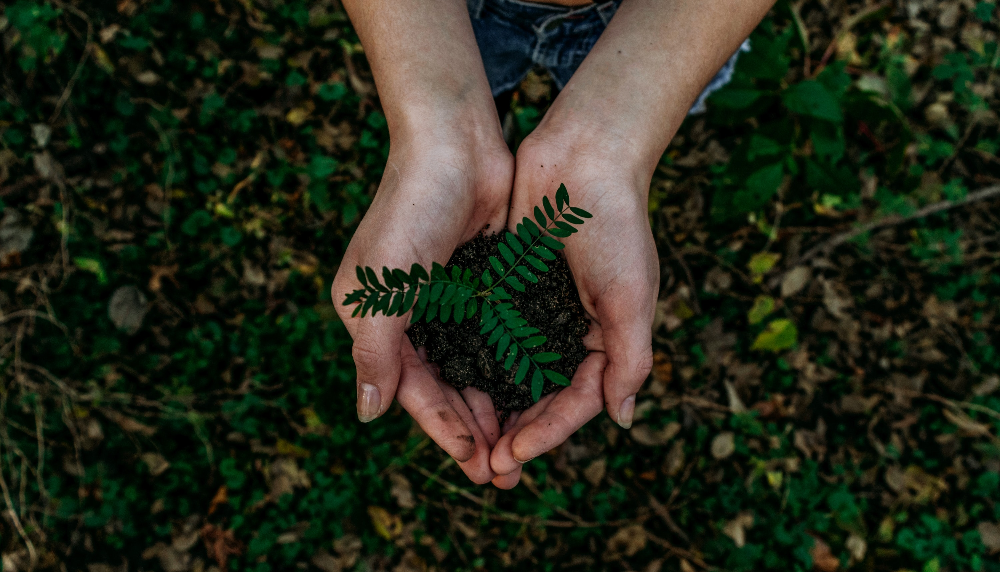

|
Tras años y años explotando al máximo todos los recursos del planeta, la Tierra ha llegado a una situación límite y ya es una evidencia que nos enfrentamos a una grave crisis medioambiental. Esta crisis es fácil de visualizar en los fenómenos naturales que se están dando en los últimos años: deshielo de los casquetes polares, calentamiento global, cambio climático, inundaciones, sequías, extinción de especies, etc. Por lo tanto, es necesario un cambio que nos lleve a una economía y un modo de vida que sea respetuoso con el medio ambiente y que haga que la Tierra vuelva a su estado natural. En este escenario, los jóvenes somos los principales protagonistas, ya que ese nuevo modo de vida depende completamente de las decisiones que nosotros tomemos y de cómo lo diseñemos. Por este motivo, nosotros, estudiantes de ingeniería de TECNUN (Universidad de Navarra), hemos propuesto un solución asequible y simple que ayudaría mucho a mejorar esta situación, y que vamos a explicar en esta página web. |
 |